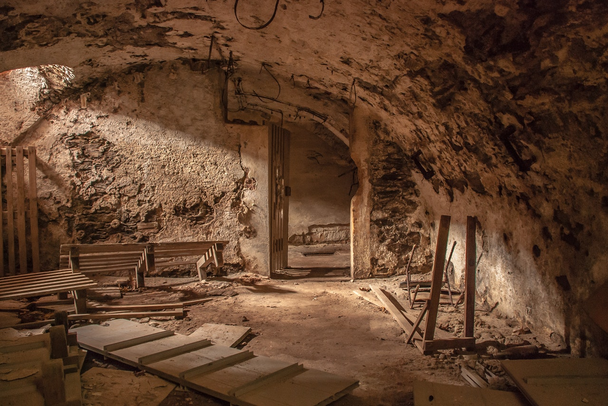

Decides ir al sótano, sin embargo, empiezas a recordar que ese lugar era tu hogar. Mientras bajas al sotano empiezas a recordar que hacias carpinteria en ese sotano en tus tiempos libres
Al llegar abajo encuentras un cuerpo, lo revisas y eres tú. Al principio estás confundido pero de pronto tu mente se aclara y te das cuenta de que estuviste muerto todo este tiempo.